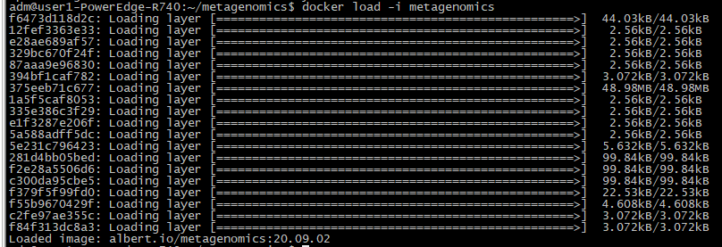
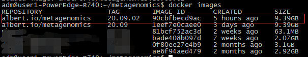
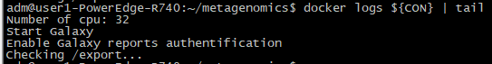
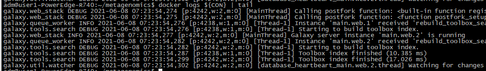
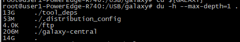
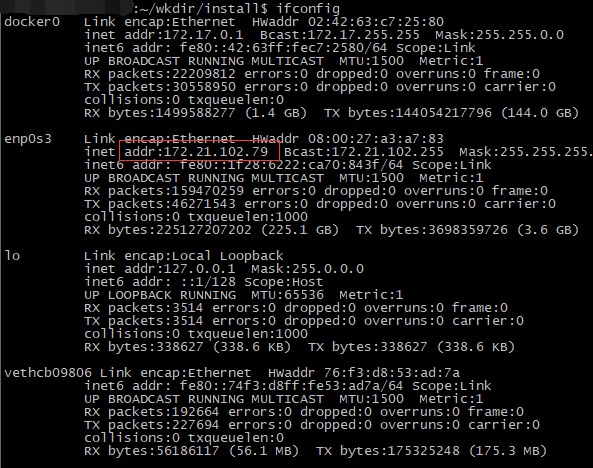
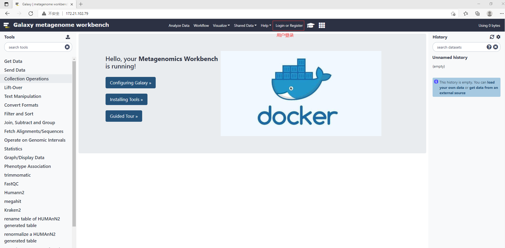
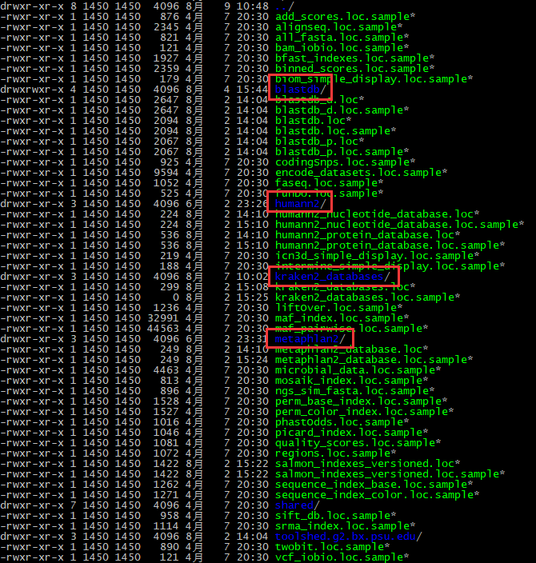

docker 安装Galaxy 安装 环境变量创建目录安装 Galaxy新建一个实例登陆网页下载数据库修改配置文件重启容器显示白名单一些其它常用命令启动容器停止容器删除停止运行的容器删除不需要的镜像测试服务器配置及耗时基本配置运行耗时
注：需要root权限。
x1# root2# 1.更新索引3apt-get update45# 2.安装依赖包, 用于通过 HTTPS 来获取仓库6apt-get install -y \7 apt-transport-https \8 ca-certificates \9 curl \10 gnupg-agent \11 software-properties-common12 13# 3.添加 Docker 的官方 GPG 密钥14curl -fsSL https://download.docker.com/linux/ubuntu/gpg | sudo apt-key add -1516# 4.通过搜索指纹的后 8 个字符, 验证您现在是否拥有带有指纹的密钥17apt-key fingerprint 0EBFCD881819# 5.使用以下指令设置稳定版仓库20sudo add-apt-repository \21 "deb [arch=amd64] https://download.docker.com/linux/ubuntu \22 $(lsb_release -cs) \23 stable"24 25# 6.安装最新版本的 Docker Engine-Community 和 containerd26apt-get install docker-ce docker-ce-cli containerd.io2728# 7.测试 Docker 是否安装成功 (可选步骤)29docker run hello-world3031# 8.设置开机自启动并启动 Docker-ce (一般安装成功后默认已设置并启动，可忽略)32systemctl enable docker33systemctl start docker3435# 9.添加指定用户到 docker 用户组, 如添加 test 用户到用户组36usermod -aG docker test
建议切换为 root 用户进行安装。
xxxxxxxxxx61# 设置一些全局变量 (根据实际情况自行调整)2export WKDIR=${HOME}/metagenomics # 下载镜像的工作目录3export GALAXY=/galaxy # Galaxy 应用的根目录4export DM=${GALAXY}/galaxy-central/tool-data/toolshed.g2.bx.psu.edu/repos # Galaxy 中工具配置文件目录5export META=albert.io/metagenomics:latest # docker 镜像及其版本号6export CON=metagenomics # docker 容器名称xxxxxxxxxx11mkdir -p ${WKDIR}xxxxxxxxxx91# 1.进入安装目录 2cd ${WKDIR}34# 2.下载镜像文件5# metagenomics 9.05 GB6wget ftp://nasdb.cn/Ydata/metagenomics/metagenomics78# 3.载入镜像9docker load -i metagenomics载入镜像：

查看镜像是否载入成功：

xxxxxxxxxx101# 新建一个容器应用2docker run -i -td -p 80:80 -p 8021:21 --name ${CON} \3 --privileged=true \4 --restart=always \5 -v ${GALAXY}:/export \6 -v /tmp:/tmp \7 -e GALAXY_DEFAULT_ADMIN_PASSWORD=admin123 \8 -e GALAXY_CONFIG_OUTPUTS_TO_WORKING_DIRECTORY=True \9 -e GALAXY_CONFIG_JOB_WORKING_DIRECTORY="/tmp" \10 ${META} /usr/bin/start_galaxy Note：第一次部署需要等待一段时间（预计5-10分钟），如网页可以加载成功，则表明该实例创建成功。
docker logs ${CON} | tail，用该指令可以查看最近的六条日志信息：

当日志出现以下内容时，则表示 Galaxy 安装成功了。

注：需要root权限。
cd ${GALAXY}进入 Galaxy 的文件存放路径，后执行 du -h --max-depth=1 ./命令查看当前文件的大小，经测试，第一次部署时，此文件夹应该会达到 17GB，也可以通过这个来大致查看安装进度。

xxxxxxxxxx31# 管理员账号密码2admin@galaxy.org3admin123通过ip地址即可访问 Galaxy 应用。Windows 用户通过ipconfig查看 ip 地址，Linux 用户则通过ifconfig查看本机的 ip 地址。
通过ifcpnfig查看本机的 ip 地址，如本例中的 ip 地址为：172.21.102.79 。

打开浏览器，通过 http://172.21.102.79 访问 Galaxy 应用，并在 Login or Register 登陆或注册新账户，如下所示：

Note：此步需要在容器完全运行后进行，当网页可以正常打开时，即说明运行运行正常。
这里我们将已经下载且安装成功的数据库进行了打包，可以直接下载进行使用，优点是比较稳定便捷。
注：需要root权限。
xxxxxxxxxx181# 1.进入数据库目录2cd ${GALAXY}/galaxy-central/tool-data34# 2.下载数据数据库到当前文件夹 (需要有相应的文件夹权限)5# humann2.tar.gz 11.24 GB6# metaphlan2.tar.gz 985.3 MB7# kraken2_databases.tar.gz 38.99 GB8# blastdb.tar.gz 24.00 GB9wget ftp://nasdb.cn/Ydata/metagenomics/humann2.tar.gz10wget ftp://nasdb.cn/Ydata/metagenomics/metaphlan2.tar.gz11wget ftp://nasdb.cn/Ydata/metagenomics/kraken2_databases.tar.gz12wget ftp://nasdb.cn/Ydata/metagenomics/blastdb.tar.gz1314# 3.解压数据到当前文件夹 (需要有相应的文件夹权限)15tar -xzvf humann2.tar.gz16tar -xzvf metaphlan2.tar.gz17tar -xzvf kraken2_databases.tar.gz18tar -xzvf blastdb.tar.gz如果遇到Permission denied异常，表明该账户没有相应的文件夹权限，需要切换到 root 或 有相应权限的账户下进行操作。
在${GALAXY}/galaxy-central/tool-data路径下需要有 blastdb、humann2、kraken2_databases 和 metaphlan2 四个数据库，如下图所示。

注：需要root权限。
xxxxxxxxxx161echo -e "\nchocophlan-full\tFull\tfull\t/galaxy-central/tool-data/humann2/data/nucleotide_database/full" >> \2 ${DM}/iuc/data_manager_humann2_database_downloader/ff9cf22838d4/humann2_nucleotide_database.loc3 4echo -e "\nuniref-uniref90_diamond\tFull UniRef90\tuniref90_diamond\t/galaxy-central/tool-data/humann2/data/protein_database/uniref90_diamond" >> \5 ${DM}/iuc/data_manager_humann2_database_downloader/ff9cf22838d4/humann2_protein_database.loc6 7echo -e "\nmpa_v20_m200\tMetaPhlAn2 clade-specific marker genes\tv20\t/galaxy-central/tool-data/metaphlan2/data/v20" >> \8 ${DM}/iuc/data_manager_metaphlan2_database_downloader/83f07f40b200/metaphlan2_database.loc9 10echo -e "T042009Z_standard_kmer-len_35_minimizer-len_31_minimizer-spaces_6_load-factor_0.7\tStandard (Created: 2021-06-02T042009Z, kmer-len=35, minimizer-len=31, minimizer-spaces=6) load-factor 0.7\t/galaxy-central/tool-data/kraken2_databases/T042009Z_standard_kmer-len_35_minimizer-len_31_minimizer-spaces_6_load-factor_0.7" >> \11 ${DM}/iuc/data_manager_build_kraken2_database/0eebe086fd58/kraken2_databases.loc12 13echo -e "bacteria\tbacteria\t/galaxy-central/tool-data/blastdb/bacteria/bacteria" >> \14 ${DM}/devteam/ncbi_blast_plus/5edc472ec434/blastdb.loc15echo -e "viral\tviral\t/galaxy-central/tool-data/blastdb/viral/viral" >> \16 ${DM}/devteam/ncbi_blast_plus/5edc472ec434/blastdb.locxxxxxxxxxx11docker restart ${CON}一些网页结果无法正常显示：Admin -> Tool Management -> Manage Allowlist，设置下权限就好了。
xxxxxxxxxx21docker start 容器名2docker start 容器IDxxxxxxxxxx21docker stop 容器名2docker stop 容器IDxxxxxxxxxx21docker rm 容器名2docker rm 容器IDxxxxxxxxxx21docker rmi 容器名:版本2docker rmi 镜像ID
xxxxxxxxxx51# 内存 / memory2$ free -h3 total used free shared buff/cache available4Mem: 55G 1.5G 41G 31M 11G 52G5Swap: 974M 5.0M 969Mxxxxxxxxxx131# 数据盘 / HDD2$ fdisk -l3Disk /dev/sda: 1.5 TiB, 1649267441664 bytes, 3221225472 sectors4Units: sectors of 1 * 512 = 512 bytes5Sector size (logical/physical): 512 bytes / 512 bytes6I/O size (minimum/optimal): 512 bytes / 512 bytes7Disklabel type: dos8Disk identifier: 0x3b56ee09910Device Boot Start End Sectors Size Id Type11/dev/sda1 * 2048 3219224575 3219222528 1.5T 83 Linux12/dev/sda2 3219226622 3221223423 1996802 975M 5 Extended13/dev/sda5 3219226624 3221223423 1996800 975M 82 Linux swap / Solarisxxxxxxxxxx31# CPU2$ cat /proc/cpuinfo| grep "physical id"| sort| uniq| wc -l31xxxxxxxxxx31# 核心数 / core2$ cat /proc/cpuinfo| grep "cpu cores"| uniq3cpu cores : 4xxxxxxxxxx31# 线程数 / thread2grep 'processor' /proc/cpuinfo | sort -u | wc -l 34xxxxxxxxxx71# 数据大小2$ ll -h YJ2021702_S12_L001_R1_001.fastq.gz 3-rw-rw-r-- 1 test test 35M 7月 8 16:59 YJ2021702_S12_L001_R1_001.fastq.gz45# read 数目6$ zcat YJ2021702_S12_L001_R1_001.fastq.gz | wc -l7889668xxxxxxxxxx41# workflow 一共运行耗时2Job Start Time 2021-07-11 05:47:093Job End Time 2021-07-11 07:36:284Job Runtime (Wall Clock) 1 hours and 49.32 minutes